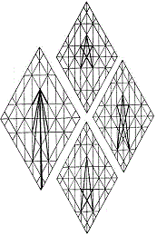
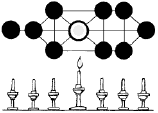
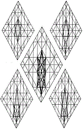

|  | Back in the Wilderness: The Seven Churches of Asia Harnessing the Dragons of the Soul  The Light that Enlightens Everyone |
 |
The human child is a worm of star-fire energies that are bundled into centers within the physical body. These spiritual energies are given in support of Life; for the physical body has no life of its own. Like the natural fires of Earth, these stellar life energies would climb out of control, were they not anchored in the body by the will of God through the agency of ImmanuAL, God's hidden Presence within each of us; for in him we live and move and have our being. To speak of God's faces, giving them names, tends to elevate one aspect of the Godhead above another. The foolishness of defining and clarifying what we understand about the nature of God is well-intended, and honorable, for that reason; but we do well to remember that such definitions tend towards idolatry. YHWH is one hwhy, and preoccupation with perceiving his features must bow to our glimpses of the whole.
The seats of Divine Spirit within the human tabernacle are known in systems of the East as chakras, which are situated on specific areas of the spinal column. As a rule, practitioners of the Eastern systems seek quietude, by which their spirits can experience a release of the energy known as kundalini, which can carry a soul beyond the realms of illusion to an eighth chakra, called nirvana, a state in which disturbance does not exist.
{kind=link}
The comparable Western system is kabbalah, whose goal, by tradition, is bliss through knowledge. In practice, meditation clears the mind, so that accurate analysis of spiritual reality is possible. The chakras are seen as perspectives within the spheres; and three centers are binary, in recognition of the duality that accompanies developing thoughts. Seven levels within ten sephiroth open the door to transformation, but an eleventh sphere, called Knowledge, stores perceptions of the ineffable realm of Ain Soph, the realm the Creator enjoys beyond Creation.
I've only a general understanding of the prevalent mystical systems of East and West and apologize for misrepresentation. Although the information they codify can be pivotal in spiritual growth, systems only reflect interior realities. My sense, however, is that the messages to the Churches of Asia have a distinctly different intent. Though reward is featured in the texts, transcendence or mastery are not primary goals. The overpowering message is a call for partnership, whose purpose is, ultimately, the redemption of all mankind.
To overcome in Asia is to dismiss constraints of logic and, by faith, to walk the earth, not only in the steps of the Master of Heaven, but as the master of heaven: that is to say, by doing his will by performing his works as they are delivered into one's hands. The gospels turned the world upside down. Righteousness is not a
 question of what
one does, but of why one does what he does. He who does not gather with
the Master of Heaven scatters.
question of what
one does, but of why one does what he does. He who does not gather with
the Master of Heaven scatters. To avoid the ditch into which a brother has fallen for fear of soiling oneself is to incur blood guilt. If we say we have no error, we deceive ourselves; and Truth is not in us. It is not for us to choose what error we allow and what we disallow. In faith, we are to offer ourselves a willing sacrifice as we surrender willful understandings to the guidance of the Master Shepherd. That being said, let no man lay a hand on another, lightly. We heal by the laying on of hands: our grip must be empowered by the guiding hand of Yahushua. Y'shua declared, "I, by myself, can do nothing," praying that Father would send workers for the harvest. If we would join in the work, we do well to remember that we serve.
For this reason, the twenty-four Elders cast their crowns before the throne, demanding, "how long"? And to that end, the saints groan in their spirits, awaiting the appearance on Earth of the Sons of God, the remnant of 144,000 souls ready and willing to do God's work on Skid Row and in the synagogues at the head of every corner throughout the world: not by crusade or revival, but in accordance with what they are shown of and by the Father of us all, which will be sufficient unto the day.
The messages to the Churches of Asia are of another order, altogether, than the testimonial gospels or the organizational epistles. The Master is demanding discipline, but not for the sake of believers, but on behalf of those who have been blinded to reason for belief by those who mouth the words of holy ways without demonstrating those ways in their daily lives, as it is written, "because of them, the way of Truth is evil spoken of."
Commentary follows the message to the angel seated within each of the chakras.
| Ephesus | ||||
| Pergamos |
 |
Smyrna | ||
| Sardis | Thyatira | |||
| Laodicea | Philadelphia | |||
|
site |
book |
|||